Candidate List 20261027Last night — ZTF: 1,127 passed basic cuts (24 young) · LSST: 0 passed basic cuts (0 young)Previous Day Next Day
Section 1: New Sources (age<1d) Section 2: Old (1-5d) sources observed last nightplaceholder
Section 2: Older Sources Observed Last Night (6)
0. [ZTF] ZTF26accrvhr (Afterglow?) [Back to Top] [Share] [Trigger Swift] [Fritz Alert] [Fritz Source] [Lasair]RA, Dec: 349.50564, 48.89349 23h18m1.35s, 48d53m36.55sGalactic (l, b): 107.52636, -11.16391 ext(g-r) = 0.218


TESS: Sectors [16 17 57 84]
PS1: 1 source in 3 arcsec Closest: d = 6.01 arcsec photoz=0.61+/-0.10 peak abs mag = -27.19
LegacySurvey: 0 sources in 3 arcsec

Extinction-corrected gr color:
From alerts: 0.18 +/- 0.08 mag
Consistent with synchrotron, g-r>0!
Rise Rate:
g: 4.41 mag/day
r: 1.21 mag/day
Fade Rate:
g: 0.25 mag/day
r: 0.2 mag/day
1. [ZTF] ZTF26accttyl (FBOT?) (TNS: AT 2017cgf) [Back to Top] [Share] [Trigger Swift] [Fritz Alert] [Fritz Source] [Lasair]RA, Dec: 127.28506, 48.4441 8h29m8.41s, 48d26m38.77sGalactic (l, b): 171.08515, 35.82722 ext(g-r) = 0.039


TESS: Sectors [20 47 60]
SDSS (<15 kpc):Found SDSS phot-z: z=0.29; peak abs mag = -25.63
PS1: 0 sources in 3 arcsec
LegacySurvey: 1 sources in 3 arcsec Closest: d = 0.07 arcsec, 190.7 deg (east of north) photoz=0.51 (68% bounds 0.36, 0.71), type=PSF peak abs mag (ext. corrected) = -27.11 (68% bounds -26.24, -27.98)

Extinction-corrected gr color:
From alerts: -0.39 +/- 0.04 mag
Rise Rate:
g: 1.03 mag/day
r: 0.79 mag/day
Fade Rate:
g: 0.13 mag/day
r: 0.12 mag/day
2. [ZTF] ZTF26accudqn (Afterglow?) [Back to Top] [Share] [Trigger Swift] [Fritz Alert] [Fritz Source] [Lasair]RA, Dec: 153.16543, -0.56021 10h12m39.70s, 0d-33m-36.75sGalactic (l, b): 242.31041, 42.86901 ext(g-r) = 0.044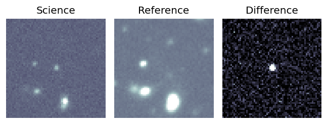
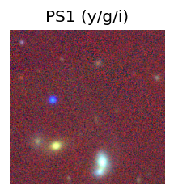
TESS: Sectors [ 8 35 45 46 62 72 89 113]
SDSS (<15 kpc):Found SDSS phot-z: z=0.44; peak abs mag = -23.54
PS1: 0 sources in 3 arcsec
LegacySurvey: 1 sources in 3 arcsec Closest: d = 1.74 arcsec, 98.9 deg (east of north) photoz=1.73 (68% bounds 0.71, 2.52), type=REX peak abs mag (ext. corrected) = -27.18 (68% bounds -24.78, -28.17)
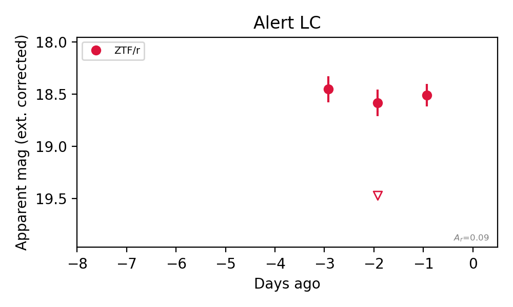
Rise Rate:
r: 0.97 mag/day
Fade Rate:
r: 1.01 mag/day
3. [ZTF] ZTF26accvzpd (Afterglow?) [Back to Top] [Share] [Trigger Swift] [Fritz Alert] [Fritz Source] [Lasair]RA, Dec: 155.22269, 65.68621 10h20m53.45s, 65d41m10.36sGalactic (l, b): 143.71784, 44.88786 ext(g-r) = 0.028


TESS: Sectors [ 14 21 40 41 47 48 74 75 119 120]
SDSS (<15 kpc):Found SDSS phot-z: z=0.03; peak abs mag = -16.81
PS1: 0 sources in 3 arcsec
LegacySurvey: 1 sources in 3 arcsec Closest: d = 1.94 arcsec, 155.3 deg (east of north) photoz=0.03 (68% bounds 0.02, 0.03), type=SER peak abs mag (ext. corrected) = -16.64 (68% bounds -16.04, -17.08)

Extinction-corrected gr color:
From alerts: -0.05 +/- 0.1 mag
Consistent with synchrotron, g-r>0!
Rise Rate:
g: 0.32 mag/day
r: 0.59 mag/day
Fade Rate:
4. [ZTF] ZTF26accudkv (Afterglow?) [Back to Top] [Share] [Trigger Swift] [Fritz Alert] [Fritz Source] [Lasair]RA, Dec: 153.795, -1.67772 10h15m10.80s, -1d-40m-39.79sGalactic (l, b): 244.02879, 42.63875 ext(g-r) = 0.048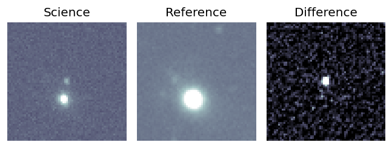
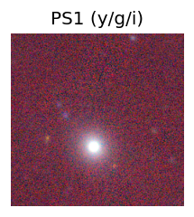
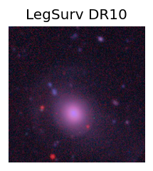
TESS: Sectors [ 8 35 62 72 89 113]
SDSS (<15 kpc):Found SDSS phot-z: z=0.07; peak abs mag = -19.03
NED host (10 arcsec):Found WISEA J101510.90-014049.5 (G, 9.9″); NED spec-z: z=0.0618 [zflag SUN]; peak abs mag = -18.80
PS1: 0 sources in 3 arcsec
LegacySurvey: 1 sources in 3 arcsec Closest: d = 5.32 arcsec, 34.1 deg (east of north) photoz=0.91 (68% bounds 0.78, 1.07), type=REX peak abs mag (ext. corrected) = -25.42 (68% bounds -25.01, -25.85)
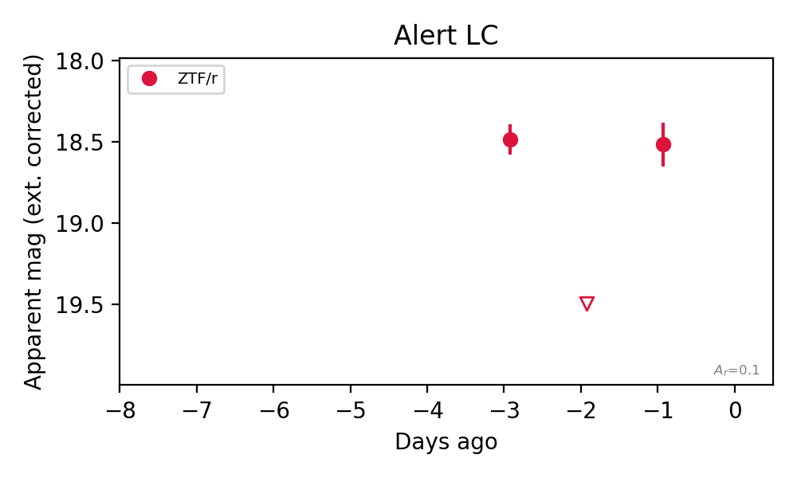
Rise Rate:
r: 0.98 mag/day
Fade Rate:
r: 1.01 mag/day
5. [ZTF] ZTF26acdcuwt (Afterglow?) [Back to Top] [Share] [Trigger Swift] [Fritz Alert] [Fritz Source] [Lasair]RA, Dec: 138.07884, 46.09034 9h12m18.92s, 46d 5m25.21sGalactic (l, b): 173.93195, 43.19367 ext(g-r) = 0.02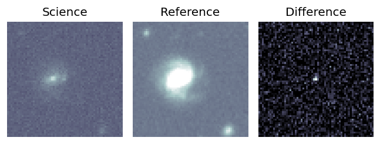
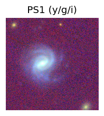
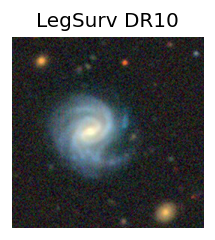
TESS: Sectors [21 47]
NED host (10 arcsec):Found KUG 0908+462C (G, 6.3″); NED spec-z: z=0.0518 [zflag SLS]; peak abs mag = -17.31
PS1: 0 sources in 3 arcsec
LegacySurvey: 1 sources in 3 arcsec Closest: d = 6.37 arcsec, 88.7 deg (east of north) photoz=0.04 (68% bounds 0.04, 0.05), type=SER peak abs mag (ext. corrected) = -16.93 (68% bounds -16.55, -17.43)
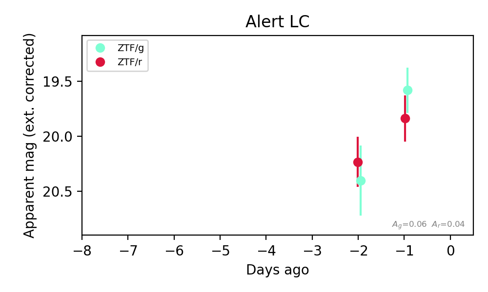
Extinction-corrected gr color:
From alerts: -0.26 +/- 0.3 mag
Consistent with synchrotron, g-r>0!
Rise Rate:
g: 0.81 mag/day
r: 0.09 mag/day
Fade Rate: